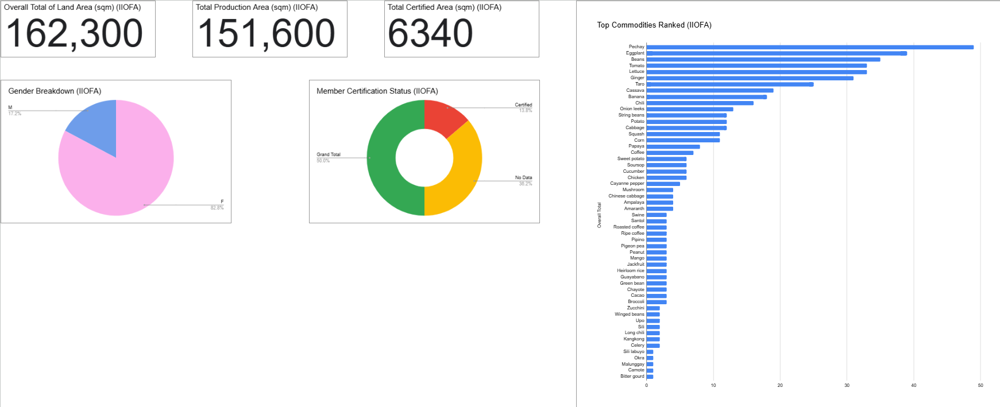
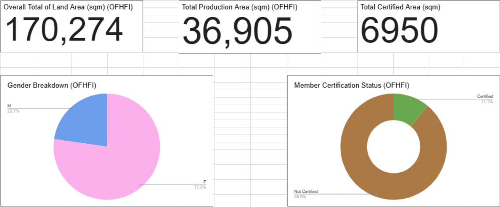
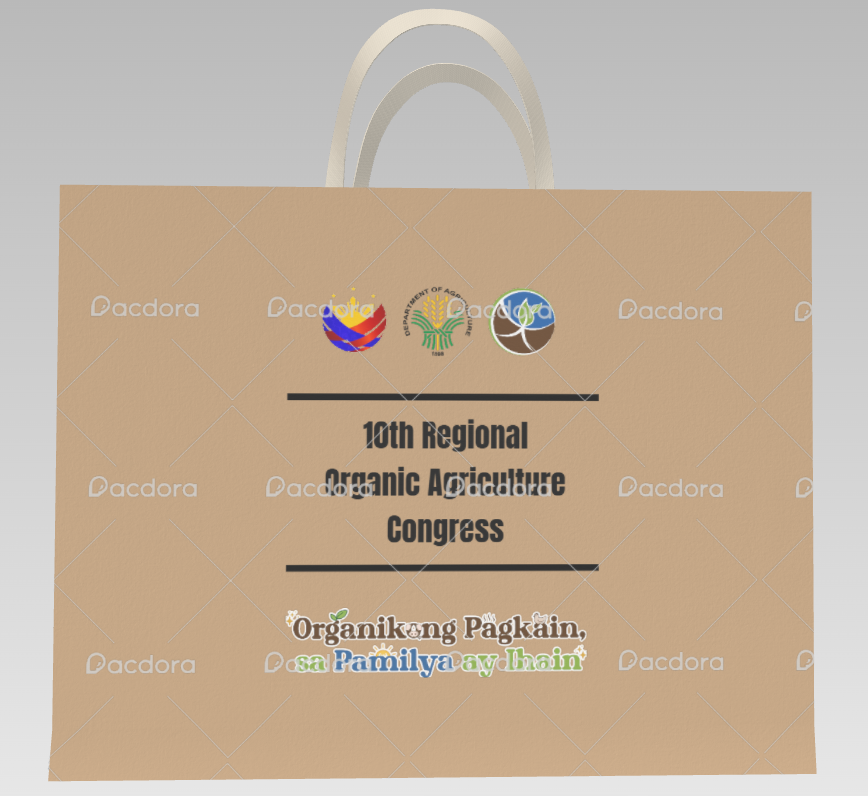
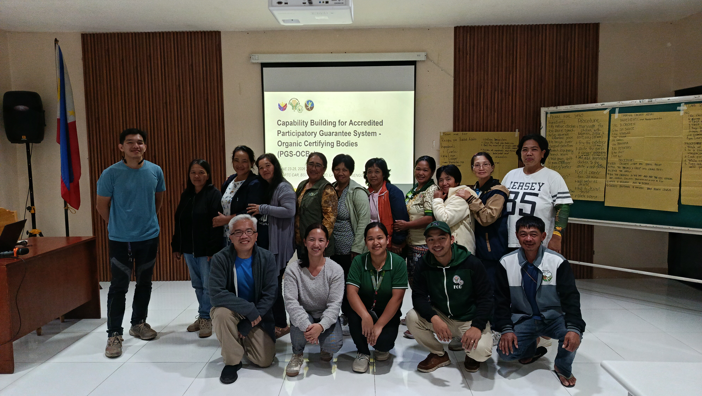
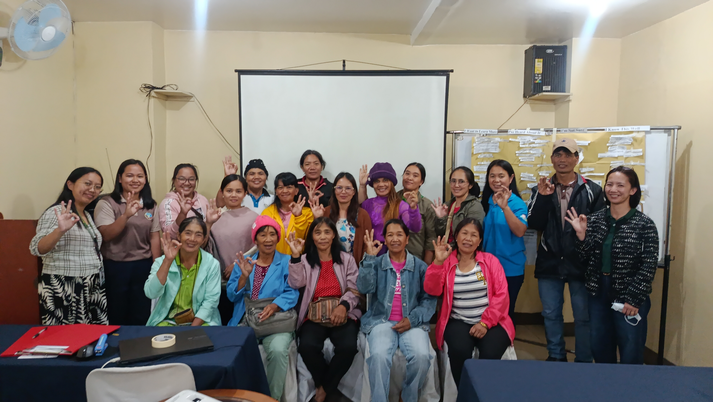

Professional Experience
Data & Design Intern
Organic Agriculture Program (Department of Agriculture)
June 2026 – July 2026


Data Visualization & Management
Built a comprehensive data dashboard to accurately reflect farmer organization data. Updated the internal database, processed RSBSA requirements, and encoded multi-year acknowledgment receipts.

Graphic Design
Conceptualized and designed official department collateral, including training notebooks, official program bags, and uniform polo shirts featuring the theme "Kabuhayang OA, Kinabukasang OK".


Event & Administrative Support
Provided on-site assistance for the "Continuous Capability Building of Accredited PGS-OCBs" three-day training program in La Trinidad. Organized and filed provincial acknowledgment receipts for Benguet, Ifugao, Kalinga, and Mt. Province.